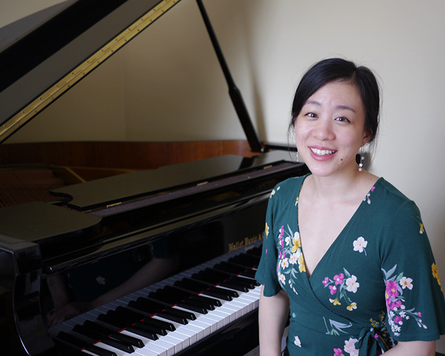

Pianist Elizabeth Yao has been praised for her sincerity of expression and the “intelligent, emotional coherence” of her musical interpretations. She has been featured as guest soloist with the Coeur d’Alene Symphony as a winner of their 2017 Young Artist Competition and as a guest artist on Spokane Public Radio’s “From the Studio” Program for a live performance and interview. Other distinctions have included prizes and awards at the Indianapolis Matinee Musicale Collegiate Scholarship Competition, the Lima Symphony Orchestra Young Artist Competition, and the Ladies Musical Club Award Tour Competition. As a collaborator, she has played with the University of Washington Symphony Orchestra and the modern music ensemble Inverted Space. She and her husband Kyunghoon Kim make up the KKEYS Piano Duo, which produces content for the YouTube channel Piano Sandbox.
Elizabeth is on the faculty of the piano department at the Indiana University Jacobs School of Music, where she serves as coordinator of the secondary piano program, teaches piano pedagogy, and co-directs the Summer Piano Academy and the Young Pianists Program. As an educator and a music advocate, Yao has worked with students of all levels and ages, with an emphasis on accessibility, student self-efficacy, and student wellness. She has toured with the San Francisco Symphony Adventures in Music educational outreach program, performing and teaching about music to thousands of elementary school students throughout the San Francisco Unified School District. She has presented her research at the MTNA Collegiate Chapters Symposium, and has been invited as a guest panelist at the Jacobs Office of Entrepreneurship and Career Development and the CCM collegiate chapter of MTNA.
Elizabeth completed her doctoral degree at Indiana University, with double minors in Music Theory and Music History and Literature, under the tutelage of Distinguished Professor André Watts. Her doctoral document, “Let the Record Show,” analyzes historical and recent recordings as an entry point for contextualizing and understanding the evolution of performance practices over the past hundred years. She completed her master’s degree at the San Francisco Conservatory of Music under the teaching of Mack McCray, and she graduated magna cum laude from the University of Washington with double bachelor’s degrees in Piano Performance (with Honors) and Chinese.
Elizabeth lives in Bloomington, Indiana, with her husband Kyunghoon and a feisty miniature poodle named Sergei.